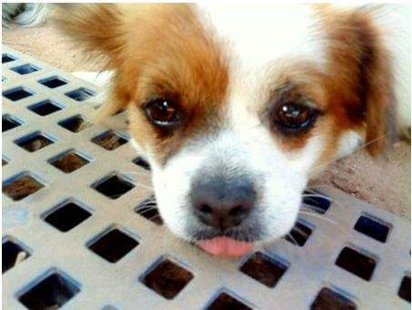
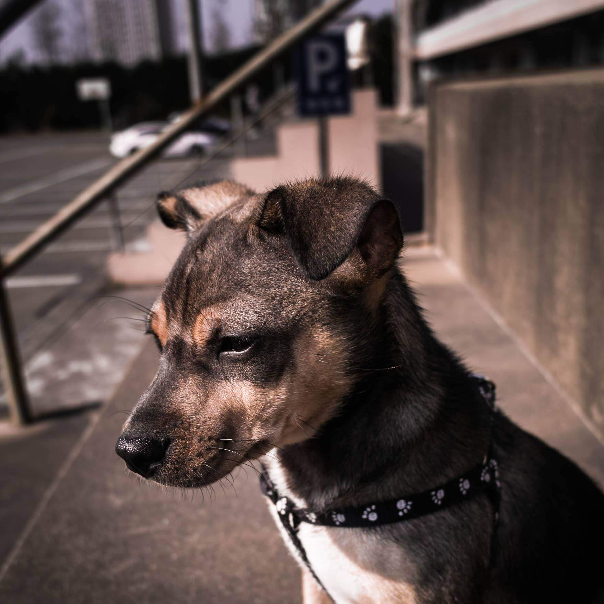
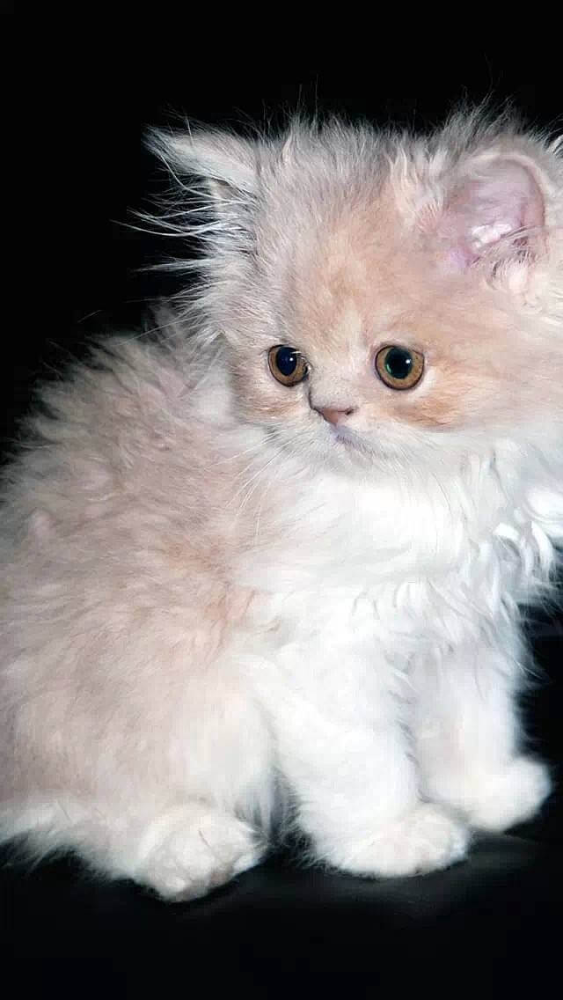

即使不爱，也不要伤害
发布日期：2018-08-15来源：宠爱之家

深圳又宣布入冬失败了！眼见着天气回暖，距离火热的夏日也没有多少时间了，不知道大家在努力生活工作的时候，走到街上，是不是也能随处可见一些流浪动物出来活动了呢？
有一些流浪动物可能在无意之间打扰到了大家乘凉，但是希望大家能够多些爱心，不要去干扰在阴凉处乘凉的流浪动物。
这里有一封来自流浪动物的信，请查收！
哥哥姐姐，叔叔阿姨，天气太热了。我们可能会停留在你的店门口，因为那里会传出阵阵凉风，但是请你们不要驱赶我打我，我不懂我做错了什么，我好害怕。
我的脚掌已经被地面烫破了，因为我走了好远好远的路。
我的肚子好饿，咕咕地叫着，连一口水都没有找到。
我好想回到爸爸妈妈的身边，也好想回到主人身边，可是我实在走不动了，也找不到路了。
求求你们，给我口水喝吧。
这些流浪猫狗的艰难处境是我们无法体会的，人类无家可归尚且还可以沿街乞讨。但是这些可怜的小动物却无法为自己发声，它只能拖着孱弱的身躯，艰难地前行，不知归处，饥寒交迫。
如果你遇到向你求助的流浪动物，也请不要吝啬，给他们买瓶水吧！让他们避免中暑带来的病痛伤害。
如果你遇到孱弱的流浪动物，也请抱着一点善意，送他们去救助站，又或者联系宠爱之家，让我们竭尽所能帮助流浪动物的生存现状。
